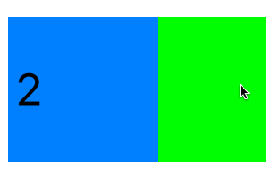
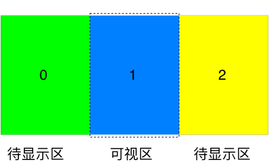
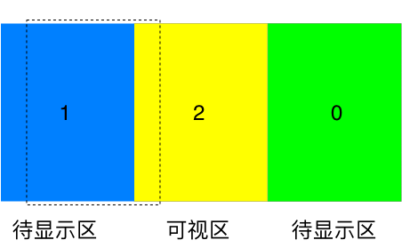

一种自定义循环滑动组件的设计
自定义循环滑动组件，通过UIView采用了复用机制来显示，UIPanGestureRecognizer来实现手势的识别，同时通过CADisplayLink来完成具体的动画。可以设定滚动方向，是否连续滚动，是否自动滚动，以及各个滚动状态的回调等 ZGLoopScrollView可以通过xib文件或者代码初始化，
前言
最初实现循环滑动组件的时候，是通过使用的UIScrollView，在delegate里面改变View的位置来实现的，但是发现这样做无法再使用UIScrollView的delegate委托了，于是乎自己动手用UIView和UIPanGestureRecognizer撸了一个，顺便仿照了一下UITableView的复用机制。
先上效果图：
原理模型
循环滑动示图显示模型如下：

显示的部分由两部分组成：可视区和左右两侧的待显示区
所需示图个数为：可视区包含View个数＋2
当触发滑动事件时，一侧的待显示区的View被移除，可视区变为待显示区，另一侧将会创建新的待显示区View，如下图所示：

轮播示图在滚动显示时有可分为部分：
- 可视区和待显示区示图的确定及其复用方式
- 在交互过程中滑动时，可视区和待显示区示图内容和位置的确定
- 交互结束后的动画事件（减速，回弹，分页滑动等）
示图的加载及复用机制
循环滚动组件中的示图＝可视区示图＋两边待显示区的示图
使用NSMutableDictionary来存储循环滚动组件中显示的示图，NSMutableSet来管理复用的示图
使用scrollOffset来记录当前滚动的位移，以计算需要加载的示图
使用dataSource来实现数据源委托
|
|
每当scrollOffset变化时
- 计算当前需要显示哪些示图，根据scrollOffset计算出需要显示的示图序号；
- 将itemViews中不需要的示图移除并存储的itemViewPool当中
- 获取itemViews中不存在但是需要显示的示图，先从集合检查是否有被移除的示图，有就从itemViewPool取出返回，否则从dataSource中初始化对应位置的示图，同时使用示图序号作为key值添加到itemViews当中；
- 根据scrollOffset调整itemViews中各个示图的位置，可以使用UIView的transform来方便的完成平移操作；
到这里，遍已经完成了示图显示初始化的核心操作，后面的滑动手势以及动画效果，都是基于scrollOffset的改变来完成的。
根据滑动事件调整位置
滑动工过程中所做的工作主要是
滑动开始时更改一些状态的标志
12345678case UIGestureRecognizerStateBegan:{_draging = YES;_bouncing = NO;_decelerating = NO;_scrolling = NO;_lastTranslation = - _vertical? [panGesture translationInView:self].y: [panGesture translationInView:self].x;}以免在滑动过程中对示图位置做的修改时，与未完成的动画事件所做的修改冲突，导致位置错乱。
滑动状态改变时
记录每次手势事件触发时的位移大小和方向，然后根据是否循环滚动(loopEnabled)，是否边界回弹 (loopEnabled)来修改scrollOffset的大小，最后从新加载需要显示的示图，和调整位置。
滑动手势结束时
纪录当前滑动手势速度大小和方向，然后启动滑动动画，做减速处理等动画操作。
滑动动画事件
滑动手势结束后的减速、回弹等动画都是采用CADisplayLink，根据屏幕刷新频率来不断的从新加载需要显示的示图，调整位置
其中减速动画，是根据手势结束时记录的速度，结合固定的动画时间来做匀减速直线运动；
回弹效果动画，是根据当前和最后的scrollOffset差值作为位移距离，结合固定的动画时间来做匀加速直线运动。
运动位置都是一些基本的物理知识做的计算，就不再用代码一一罗列，有兴趣可以下载源码查看 。
到此，循环滑动组件的设计所包含的最基本内容已经完成。
其他内容
- 水平与垂直滚动两种模式，通过vertical属性确定。在两种模式下，scrollOffset，手势的位移、速度，动画效果，以及示图的位置计算分别与之对应；
- 为了不因clipsToBounds属性的设置导致待显示区的示图被显示出来，组件内部添加了容器UIView contentView，重写了layoutSubviews方法，对contentView的frame做出了修正；
- 仿照UIScrollView，通过delegate实现各个滑动状态的委托；
- 通过NSTimer实现自动滚动
小结
本文主要分析了循环滚动示图的实现过程，同时通过UIPanGestureRecognizer和CADisplayLink，采用UIView复用的方式对其进行了实践。
具体源码和使用范例可以在我的GitHub主页下载 下载Demo查看